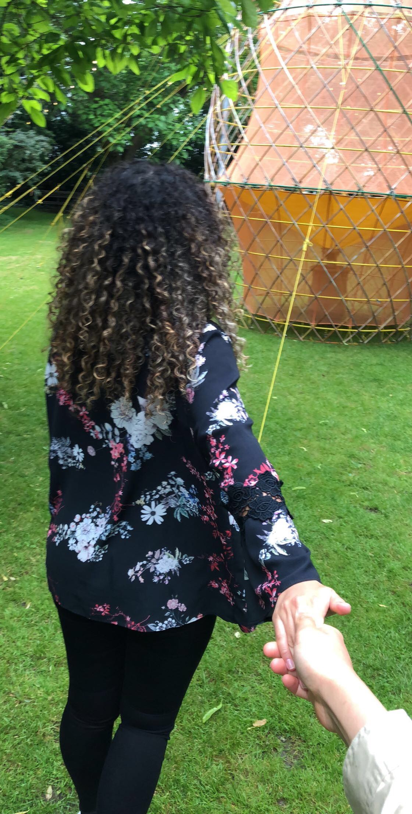

Excursion Robotanica 2018
Op vrijdag 1 juni 2018 ben ik na mijn werk, geheel uitgeput nog naar een evenement in Amsterdam gegaan. Dit evenement heet Robotanica en hier laten mensen zien wat zij hebben gemaakt en spreken zij kort over het proces wat hun product is ondergaan.
Project: Warka Water 🕸️

Dit project is gemaakt door Arturro Vittiro, een Italiaanse architect, industrieel designer en artiest. Het project sprak mij in het begin niet aan, want het zag er voor mij niet aantrekkelijk uit. Pas nadat ik de presentatie van Arturro Vittiro had gehoord, vond ik het een interessant en leuk project. In het begin had ik eerlijk gezegd niet eens naar de naam gekeken, maar toen de spreker begon zag ik de naam: Warka Water. Toen ik het woord water zag, was ik meteen geraakt. Het tekort aan water op de wereld is een zeer belangrijk probleem naar mijn mening, vooral in de derde wereld landen. Zelf probeer ik mijn best te doen om iets toe te voegen aan de samenleving en de slogan van dit project voldoet hier ook aan: Every Drop Counts. Op de website van Warka Water staat meer informatie over het project.
Dit project is gemaakt naar aanleiding van een bezoek aan de mensen in Ethiopië. Hier zag de projectleider dat de mensen geen goede water voorzieningen hadden en hij wilde iets voor ze doen met de kennis die hij heeft. Aan het begin vertelde hij dat hij het volledige idee eigenlijk heeft gebasseerd op een spinnenweb. Spinnenwebben vangen namelijk alle druppels op die uit de lucht komen vallen en zo wilde hij dat ook doen voor de mensen in Ethiopië. Bladeren van bloemen en cactussenn hebben hem ook geïnspireerd, dus veel inspiratie uit de natuur! Dit is altijd mooi en kan goed wetenschappelijk onderbouwd worden.
Om dit idee uit te kunnen werken heeft hij gebruik gemaakt van verschillende materialen. Met driedimentioneel gaas wilt hij het water uit de lucht opvangen. Dit wordt gedaan door mensen die om het product heen gaan staan, dit zorgt ook voor eenheid onder de samenleving.
Reflectie
Van deze excursie heb ik vooral geleerd dat je je niet aan een idee vast moet klampen. Tijdens zijn presentatie vertelde Arturo Vittiro, dat zijn project verschillende vormen heeft gehad. Deze liet hij ook zien en ik vond het leuk om te zien dat zijn uiteindelijke idee niet hetzelfde is als zijn eerste idee. Natuurlijk zijn er delen die hetzelfde zijn gebleven, maar er was zeker veel veranderd.
 Dit is een punt waar ik zelf vaak problemen mee heb, dus zo zie ik dat hele grote projecten ook niet in een keer heel goed beginnen. Alles komt goed door te testen en verschillende ontwikkelingen te doen. Het verbeteren van het product en kritisch kunnen zijn op jouw eigen product is een zeer belangrijk punt.
Dit is een punt waar ik zelf vaak problemen mee heb, dus zo zie ik dat hele grote projecten ook niet in een keer heel goed beginnen. Alles komt goed door te testen en verschillende ontwikkelingen te doen. Het verbeteren van het product en kritisch kunnen zijn op jouw eigen product is een zeer belangrijk punt.
Ik ben blij dat ik op deze dag aanwezig was en niet later, want ik hoorde van anderen dat er op de dagen erna geen sprekers aanwezig waren. Dan had ik heel het verhaal gemist en kon ik ook niet zien wie achter mooie idee zit.
Voor de rest vond ik de expositie heel leuk, vooral de locatie. (Hier heb ik gebruik van gemaakt, hierbij bedankt ik Mike voor de 200 foto's die hij heeft gemaakt.😳) Het was totaal buiten mijn verwachtingen, ik dacht namelijk dat het een museum achtig gevoel zou geven.